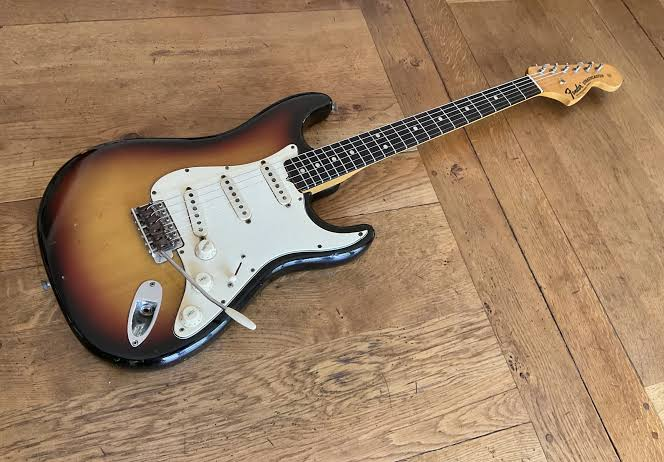
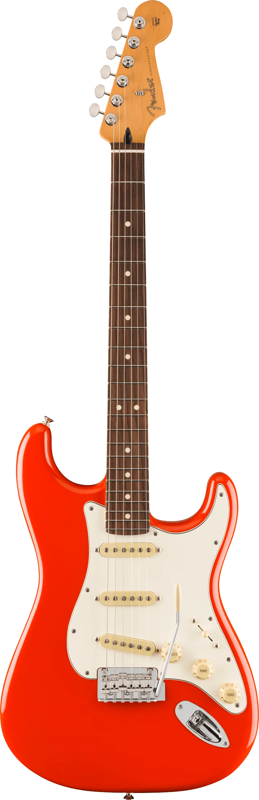
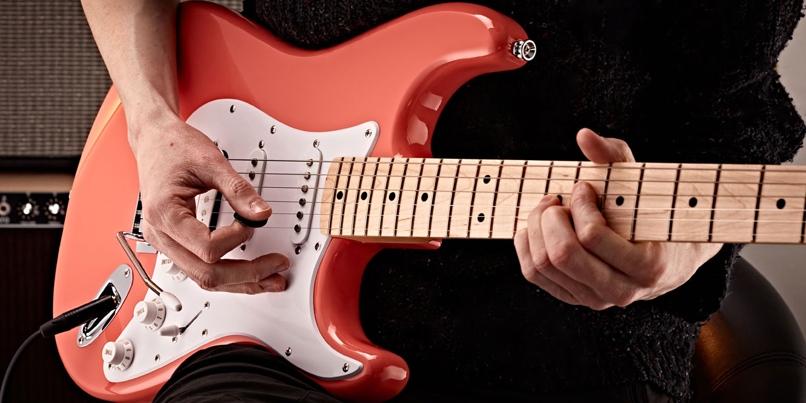
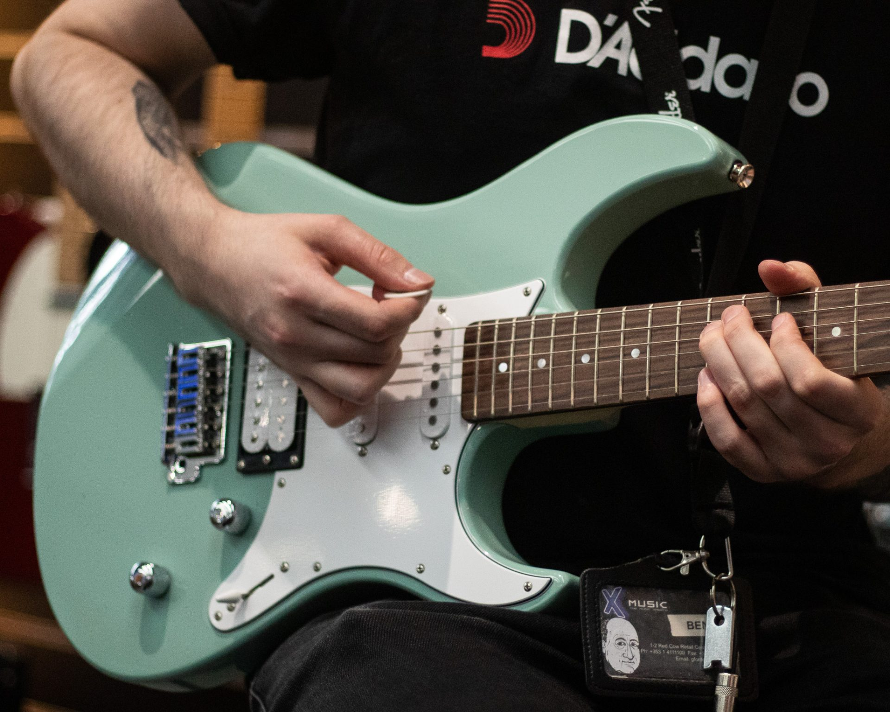
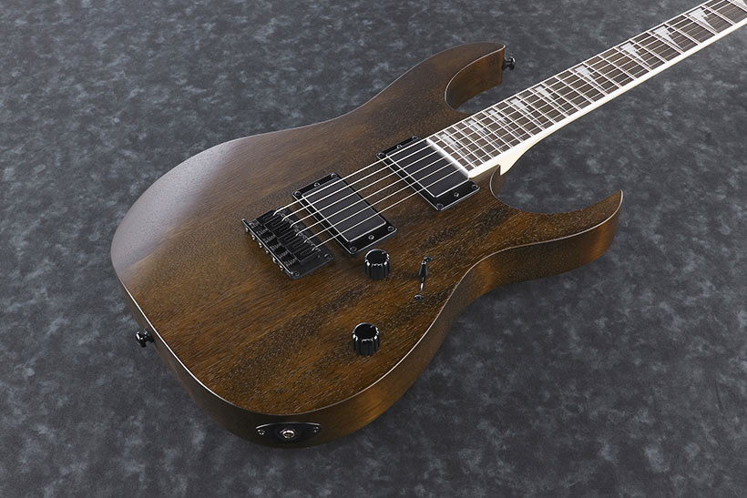

VŠESTRANNÝ TVARStratocaster
Kontúrované telo s dvojitým výrezom, tri jednocievkové snímače a tremolo. Navrhnutá v rokoch 1952 až 1954 tímom okolo Lea Fendera, na trh prišla v roku 1954.
- Rock, blues
- Jasný a artikulovaný tón
Spoznajte tvary, časti a značky elektrických gitár na jednom mieste. Vytvorte si prehľad a nájdite nástroj, ktorý vyhovuje vášmu štýlu a skúsenostiam.
Preskúmajte gitary
Spoznajte ikonické tvary elektrických gitár a objavte, ako jednotlivé časti
nastroja ovplyvňujú jeho zvuk, pohodlie aj charakter.

VŠESTRANNÝ TVARKontúrované telo s dvojitým výrezom, tri jednocievkové snímače a tremolo. Navrhnutá v rokoch 1952 až 1954 tímom okolo Lea Fendera, na trh prišla v roku 1954.
 KLASICKÝ TVAR
KLASICKÝ TVARJedna z prvých sériovo vyrábaných gitár s plným telom. Jednoduché telo s jedným výrezom, skrutkovaný krk a charakteristický, čistý zvuk. Vznikla v roku 1950.
 JEDEN VÝREZ
JEDEN VÝREZGitara s jedným výrezom, mahagónovým telom s javorovým vrchom a vlepeným krkom, zvyčajne s dvoma humbuckermi. Prvýkrát sa predala v roku 1952, vznikla v spolupráci s gitaristom Lesom Paulom.
 DVOJITÝ VÝREZ
DVOJITÝ VÝREZGibson ju uviedol v roku 1961 s dvojitým výrezom a vlepeným krkom. Skratka SG znamená „solid guitar“. SG Standard je najpredávanejší model značky.
Kliknite na názvy časti alebo bod v diagrame a zistíte, na čo slúži.

Kliknite na body pre zobrazenie informácií.
Objavte overené značky a prvé elektrické gitary pre začiatočníkov. Bez zložitých žargónov, s výborným podkladom vášho štýlu a rozpočtu.
od 1946
Ikonický dizajn, zvuk a pohodlný tvar, ktorý inšpiroval generácie rockových gitaristov.
od 1902
Legenda medzi rockovými gitarami. Hustý tón, mahagónové telo s javorovým vrchom a nadčasový vzhľad.
od 1957
Rýchle krky a moderný charakter pre hráčov, ktorí sa venujú náročnej technike.
od 1980
Superstratový tvar s menším telom a skrutkovaným krkom. Najpredávanejší model značky, obľúbený pre metal, hard rock a rýchlu hru.
od 1975
Cenovo dostupná gitara s mahagónovým telom, vlepeným krkom a humbuckermi ESP LH-150. Vhodná na rock aj metal.
od 1985
Dvojitý výrez, 24 pražcov a javorový vrch na mahagónovom tele. Prvý sériový model značky z roku 1985.
Vybrali sme modely, na ktorých sa dobre učí a ktoré vás budú baviť.
Cenovo dostupná gitara s pohodlným krkom na učenie základov a každodenné cvičenie.

169 €Ľahká gitara v klasickom tvare Stratocaster, vhodná na prvé kroky aj každodenné hranie.

299 €Všestranná gitara s pohodlným krkom, vhodná na prvé akordy aj objavovanie rôznych štýlov.

229 €Moderná gitara s tenkým krkom a dvoma humbuckermi na výrazné riffy aj sólovú hru.
Prehliadka obrázkov vybranej gitary.